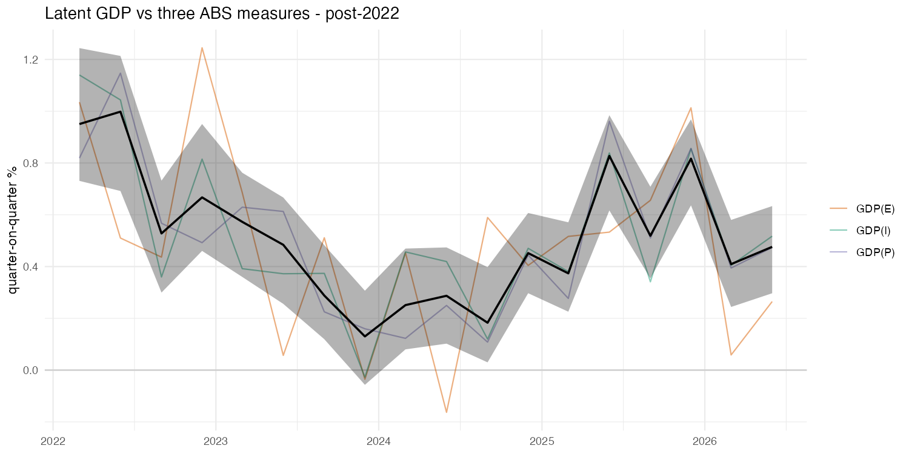
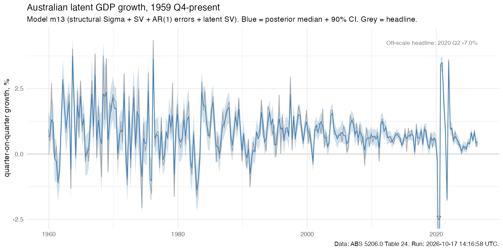

+0.48%
90% credible interval: [+0.30, +0.63] (quarter-on-quarter growth)
| GDP(E) expenditure-based | +0.26% |
| GDP(I) income-based | +0.52% |
| GDP(P) production-based | +0.47% |

This page publishes a Bayesian state-space estimate of Australian quarterly GDP growth that filters measurement error out of the three ABS measures (Expenditure, Income, Production-based GDP). The model is m13 from this repo: an AR(1) latent state whose volatility changes over time, measurement errors that follow their own AR(1) with stochastic volatility, and a construction-based zero restriction on the Production-side error covariance. Background: RBA RDP 2014-12 (Rees, Lancaster & Finlay).
Data: ABS Cat. 5206.0 Table 24 (Selected Analytical Series), seasonally adjusted, chain volume measures. The page is rebuilt automatically after each quarterly release.

Each measurement error follows an AR(1) with coefficient ψk, so an error in one quarter can be partly carried into, or reversed in, the next. ΣEI,t has standard deviations σE,t, σI,t and a constant correlation ρEI: E and I share national-accounts balancing items. P is built from independent industry surveys, so its error is independent of E and I by construction (the "structural Sigma"). The first quarter's errors start from the stationary distribution at that quarter's variances.
There are two kinds of volatility. The measurement-error volatility h captures the long fall in measurement error (largest in the 1960s–70s). The latent volatility τt lets the volatility of true growth change too: in the current fit it falls from about 4.9 (annualised, decade average) in the 1960s to about 1.4 in the 2010s and rises to about 12 in 2020 Q2. COVID is therefore treated as a large real shock, not as measurement error: the three measures agreed in 2020 Q2, so the collapse goes into μt. The estimated ψ are about −0.46, −0.36 and −0.19 for E, I and P (posterior medians); negative values mean that the measurement errors partly reverse the next quarter. Given both volatility paths, μ is integrated out by a Kalman filter on the quasi-differenced data yt − ψ yt-1 during sampling, and drawn by forward-filtering backward-sampling. With τt held constant the model is m12, the previous production model.
In the model's annualised units (400×dlog; this page shows quarter-on-quarter, i.e. divided by 4). N(m, s) has sd s.
All priors for all models: priors.md. Nothing is published unless the fit has <0.1% divergences, E-BFMI ≥ 0.3, R-hat ≤ 1.01 (hyperparameters) / 1.05 (latent growth and both volatility paths) and ESS ≥ 400.
The 13 specifications were compared by leave-future-out cross-validation: one-step-ahead predictive density, latent states integrated out, 146 quarters from 1990 Q1 (current-vintage data). They were compared in three groups with different data: the three measures on the full sample (m1–m7, m9, m12, m13); the three measures plus hours from 1978 (m8, m10); and the mixed-frequency m11, which also sees monthly employment inside the predicted quarter.
The comparison scores predictions of the observed measures, not the split between true growth and measurement error, and models that predict about equally well can imply very different splits. Over the full sample m13's latent path has 79% of headline variance (from the current production fit) and m12's 78%, but over 1978–2026 excluding 2020 Q1–2021 Q1 m13's has 75%, m12's 88% and the hours model m10's 56%. Apart from m13's full-sample figure, these splits come from research-suite fits on the 2026 Q2 data and are not updated by the weekly run. The variance figure above is therefore a property of m13, not something the comparison confirms.
An earlier PSIS-LOO comparison on this page (m9 +6 over m4, SV +240) was invalid and has been withdrawn.
Full research record (all 13 specs, the comparison tables and the caveats) at NOTES.md. Stan source at stan/m13_serial_latent_sv.stan.